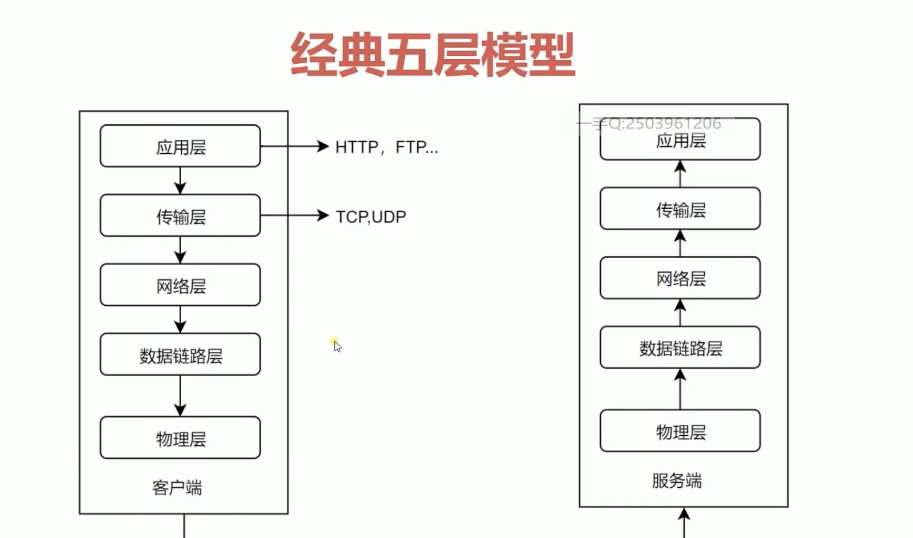

http
http 分为经典的五层模型

http 发展协议历史
http/0.9
- 只有一个命令GET
- 没有HEADER等描述信息
- 服务器发送完毕，就关闭TCP链接。
http/1.0
- 增加了很多命令 post、put、delete
- 增加了status code和header
- 增加了多字符集的支持，多不分的发送，权限,缓存
http/1.1
- 持久链接
- pipeline
- 增加host和其他一些命令
http2
- 所有数据都是以二进制传输的。
- 多路复用(但是如果传输的过程中出现丢包的情况，http2的反应性能还不如http1.1, )
- 头信息压缩
- server push
http3
- 搞了一个基于 UDP 协议的 QUIC 协议
- 多路复用 同一条 QUIC连接上可以创建多个stream，来发送多个HTTP请求，但是，QUIC是基于UDP的，一个连接上的多个stream之间没有依赖。
URI
统一资源标识符
用来标识互联网上的信息资源
包含了URL和URN
URL
统一支援定位器
例如ftp
RUN
永久统一资源定位符
http报文
请求报文
首行/起始行
- method 方法,定义对资源的操作。
- url 请求资源的地址
- 协议的版本
相应的首行
- http协议
- code 服务器对请求的结果。
- 1 请求开始
- 2 请求成功
- 3 需要重定向
- 4 客户端请求错误
- 5 服务端错误
- ok